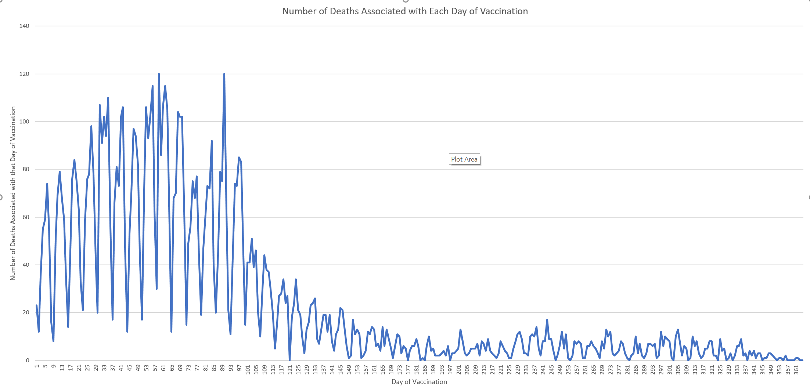
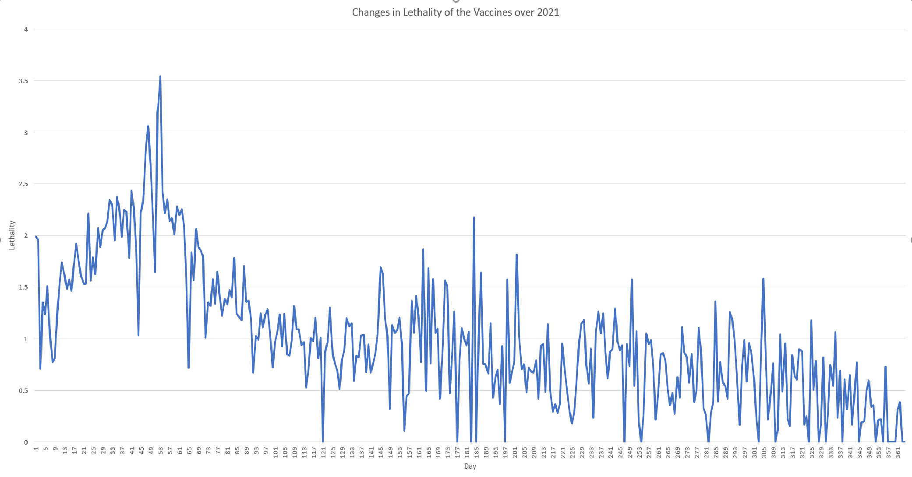
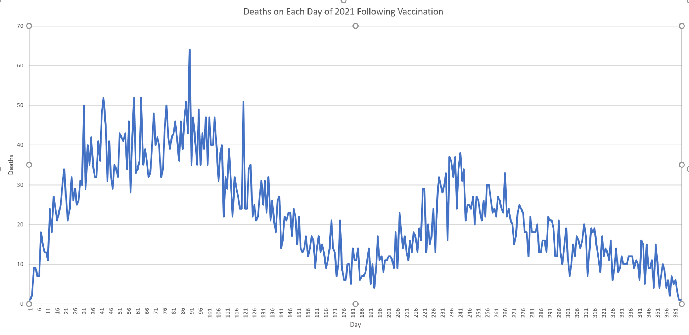

The Second Peak - Long term / Delayed Effects of the Vaccines
home | Booster Warnings by Month | Moderna | Pfizer | Janssen | Moderna (outside USA) | Pfizer (outside USA) | Janssen (outside USA) | International Deadly Lots | 1st & 2nd Doses | Severe | Lethal | Size Matters | Lot Sizes | Time till onset | Second Peak | Lot Expiry Dates | RNA Degradation | Causality | All or Nothing | Clusters | Symptom | Paralysis | Children | Gender | States | Geography | Japan | Case Reports | Whistle Blowers | EMA Leaks | Video Library | Treatment | Background | Download Source Code | Data Cleaning | Donate
If this site is slow loading that's because over 1 million people are accessing it right now. Please use auxillary site HowBadisMyBatch.com which has been set up to cope with this overload. Thankyou.
Please consider donation in support of this ongoing work Donate
On a previous page, here, we looked at the time till onset of adverse reactions, and we found that there was a strong clustering of adverse reactions immediately after vaccination. This constitutes the first peak. We could think of this as the immediate or acute effects of the vaccines.
What you are about to read, is that there is a second peak, occurring at a defined time after the first peak, which we might regard as the chronic or long-term effects of the vaccine.
In order to show this, we will look at the distribution of deaths and hospitalisations following the first and second doses
FIG 1 : Deaths following Vaccination
The first chart shows the effects of the first dose. Notice that most of the deaths after the first dose occur within 30 days, and peter out after that - so the first dose mostly produces an acute, immediate reaction. Also notice that the occurrence of death persists for longer in the older age groups, suggesting that the active ingredient/s causing the death persists for longer in their bodies.
Now look at the second chart, which shows the effects of the second dose. Here the greatest concentration of deaths is still immediately after the vaccine, and declines exponentially as each day passes, until the frequency of death reaches a minimum at about 100 days post vaccination. It then starts to rise again, and there is a second peak at about 180 days post vaccination. Notice that the second peak is only apparent for people over 50.
FIG 2 : Graphs showing Second Peak
FIG 3 : Hospitalisations following Vaccination
These two charts show the number of hospitalisations following vaccination. They show a similar pattern to the charts for death - except that the second peak is far more apparent.Once again, the second peak seems to mainly effect the over 50s.
Decrease in Lethality over 2021
Here is a chart showing the number vaccinated on each day of 2021, as recorded in VAERS. This replicates the findings of Jason Morphett, but uses a different source of data (I used VAERS to count number vaccinated on each day, whilst Jason used the governments recorded vaccination numbers obtained from a separate CDC database.)
A minimum is found to occur every 7 days, because fewer people are vaccinated on Sundays
When I counted the number of deaths associated with the vaccinations given on each day, I obtain this graph - again based on VAERS data for USA for 2021. This is the same as the graph produced by Jason Morphett

Notice again that the number of deaths associated with each day of vaccination also follows a periodic 7 day occilation.
When number of deaths associated with a particular day is divided by the number of vaccines given on that day, we obtain the lethality - a measure of toxicity. Graph 3 shows that lethality declines over 2021.

So the vaccines have actually decreased in toxicity over 2021. The vaccines were twice as lethal in the first quarter compared to the third quarter of 2021. They reserved the worst shots for the aged in the first quarter (eugenics/ cost saving on social care?)
Curious Distribution of Death
The deaths associated with the vaccines given on a particular day, do not occur on that day. Rather, these deaths are spread out over many days following vaccination. When we look at the actual dates of death and plot these on a graph for each day of 2021, we obtain the following -

What can account for the rather large second peak of deaths? The deaths show a large bulge in the third quarter which is not expected, since we have seen that numbers vaccinated was falling, and so was toxicity.
The two peaks are out of phase by approximately 180 days
At the beginning of this page I showed that following the vaccination of the aged, there are two peaks, and the second peak starts 180 days after vaccination. I therefore propose that this large bulge in deaths is primarily the result of vaccines given in January, February and March. It is the second peak - 180 days after vaccination - the long-term effects of the vaccine.
Testing the Idea
In order to test the idea that the second peak (occurring in the third quarter of 2021) was due to the long term effects of the initial vaccinations in the first quarter of 2021, I simply counted the number of deaths on each day, but filtered out those records where the deaths were taking place more than 100 days after vaccination. I wanted to see if the second peak disappeared when I did this.
The results are shown below, and confirm that the second peak arises due to long term effects of the vaccination - resulting in a second maximum of deaths 180 days after vaccination
In order to find out the precise cause of the second peak, I will need to look at what the people died from. This will tell me if it was immune deficiency or something else - and will tell us about the mechanism of long-term vaccine effects.
Kentucky
VAERS data for deaths in Kentucky shows a very large increase in mortality in the third quarter following Covid 19 vaccinations. Scientists have been wondering what could possibly give rise to such a large increase.
I decided to carry out a test to see if the large Q3 peak might be the second peak caused by the initial vaccines given in Q1, rather than from vaccines given in Q3.
So, first I plotted all deaths (shown in blue). Then I plotted only deaths occuring less than 100 days after vaccination (shown in orange)

As you can see, 83% of the Q3 peak has nothing to do with the vaccines deployed in the third quarter, but consists of the delayed deaths from atleast 100 days earlier. Consequently the Q3 peak is actually the delayed effects of the Q1 and Q2 vaccines
What is really scary is the magnitude of Q3 - it is 3 times that of Q1. The vaccine appears to act like a time bomb - its destructive power is delayed with a fuse lasting atleast 100 days !!
Texas
Here is the VAERS data for Texas - showing the number of deaths each month (blue). The orange columns show number of deaths each month when date of death is less than 100 days after vaccination. When we remove all deaths greater than 100 days after vaccination, the peak in Q3 disappears completely - showing that the Q3 peak is comprised entirely of the effects of vaccines given in Q1 and Q2 - the delayed effect. Once again the delayed effect accounts for 80+% of the Q3 peak
Michigan
Here is the graph for Michigan. Notice that the third quarter peak (Q3) is once again comprised mostlyof the delayed deaths resulting from vaccines given in Q2 and Q1.
Tennesee
Here is the graph for Tenessee. Notice that the third quarter peak (Q3) is once again comprised mostlyof the delayed deaths resulting from vaccines given in Q2 and Q1.
Georgia
Here is the graph for Georgia. Notice that the third quarter peak (Q3) is once again comprised mostlyof the delayed deaths resulting from vaccines given in Q2 and Q1. Georgia demonstrates the most pronounced effect.
(Georgia is also renouned for its monument, an inscribed monolith describing a worldwide depopulation)
Does this pattern hold for all States?
The explosion of mortality in Q3 is confined to select states - Michigan, Tennessee, Texas, Kentucky, Georgia, Florida and Ohio. These are all mainly in the South East of the USA. Whats more, this mortality explosion is confined to people of working age. Other states such as New York, California and Pennsylvania, do not show this explosion of mortality.
It is incredible that many states do not show this delayed effect - the only explanation I can think of is that the vaccines may have been adulterated to test this delayed effect in select states, and on a younger age range.
For example, here are the results for California - there is barely any second peak. Considering that California has the highest number of vaccinated, this is remarkable. The sharp distinction between the California result and the results for the states above suggests that the delayed effect may be produced by an adulteration
And here are the results for New York
Almost all of the states in the USA showing high deaths following vaccination, just happen to be the same states where the delayed death phenomenon has been found. Notice that Kentucky (KY), Michigan (MI), Minnesota (MN), Tennessee (TN), Georgia (GA), Florida (FL), and Texas (TX) have a dark shade.
Excess Deaths in States of KY, MI, MN, GA, TN
We had noticed excess deaths in these states a few months back, but did not know the cause.
If you want the statistical calculations for these outliers, then we have found that deaths for Kentucky is more than 4 standard deviations from the mean - which means that it is way higher than expected. And Michigan, Minnesota and Tennessee all lie outside of the 95% confidence interval.
Possible Mechanism
In all of the states showing the second peak effect, deaths persist for much longer after the vaccination date. In fact, the rate of death over time is a straight line. This suggests that the active ingredient is not diminished over time.
In comparison, in all the states not showing this effect, deaths decrease exponentially from the time of vaccination - suggesting that the active ingredient is diminishing in quantity as time passes
If the concentration of the active ingredient does not diminish over time then either it is not being broken down and excreted, or it is being replaced at the rate at which it is excreted
In pharma terms we would say they have either extended the half life of the drug, or found a way to make the body generate more of it
In the graphs below, you can clearly see that in all the states showing a strong second peak, deaths persist over a much longer time following vaccination, and tend to cluster into two peaks.
In the graphs below, the states showing a strong second peak have a straight line profile, indicating that the rate of deaths is constant over time. In contrast, states not showing a second peak have profiles that rise rapidly then flatten out. It is hard to believe that the same vaccine would have such different effects across different states

How Did They Die?
What we need to do now is look at the way the people died in the second peak. This will provide more clues as to the mechanism.
The Mortality Bomb
I use the phrase "mortality bomb" to describe a biologically active ingredient that produces a delayed death 6 months after exposure. It describes a situation where there is an "explosion" of deaths - larger than any preceding levels.
It is worth bearing in mind that the delayed effect, apparent in these south eastern states, could have been a trial run. It was carried out in a small number of select states, and probably on a small number of people. Now that they know it works, it can be used on far larger populations - possibly as a means of significant depopulation.
Sources :
FIGS 1, 2 and 3 above are taken from the work of Jason Morphett, whose substack articles you can find referenced below.
Contact
covidscienceteam@protonmail.com
Created by Craig Paardekooper ©2021